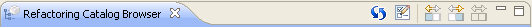

ToolbarToolbar
ToolbarToolbar
The Refactoring Catalog Browser's view contains a toolbar that includes a set of actions that can be carried out over the view. It has a list of five buttons that we can see in the following picture and we're gonna explain in this section.

Refresh view
It refreshes the catalog so it updates itself with the last changes made to the list of classifications and refactorings.
It opens the classification's editor that allows the user to edit the list of classifications.
Show left, right and all panels
These buttons allow the user to see only the left panel, only the right one or both panel's of the catalog's view respectively.